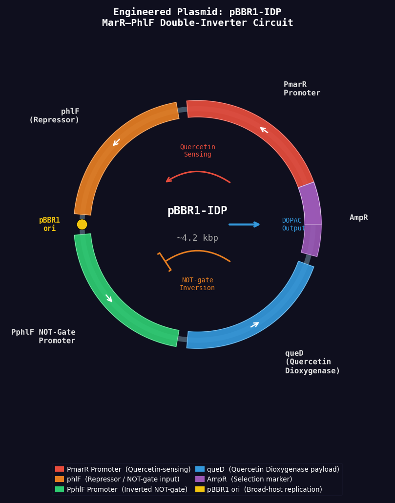

Healthy Gut (Reference)
No inflammatory Quercetin · Normal microbiome
IBD Gut → Engineered Bifidobacterium Treatment
T = 0.0 h
Inflammation: 100%
Engineered Plasmid: pBBR1-IDP

ODE Kinetic Traces — 5-Phase Biological Timeline
Molecule Key
Quercetin (IBD flare)
Quercetin–MarR complex
(circuit sensing)
(circuit sensing)
DOPAC (therapeutic resolution)
Bifidobacterium (enzyme producing)
Bifidobacterium (idle)
Neutral luminal proteins
Status: IBD Flare Active